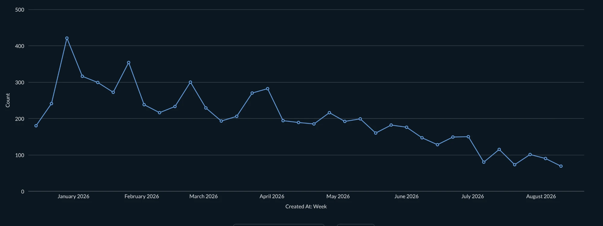
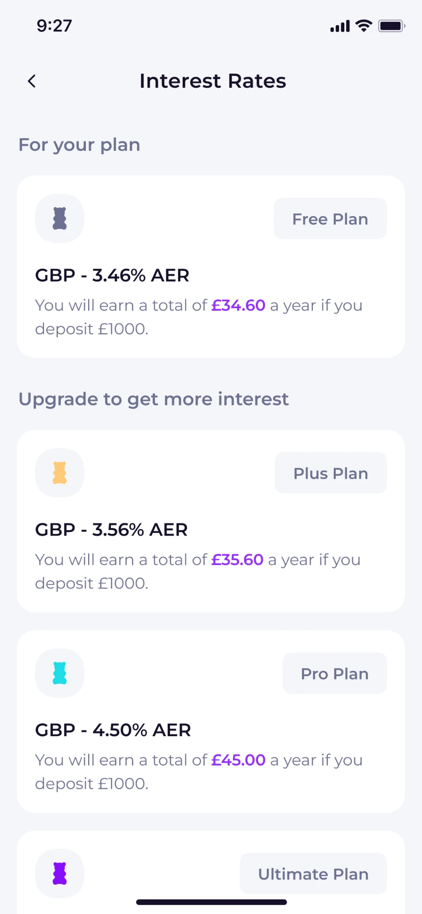
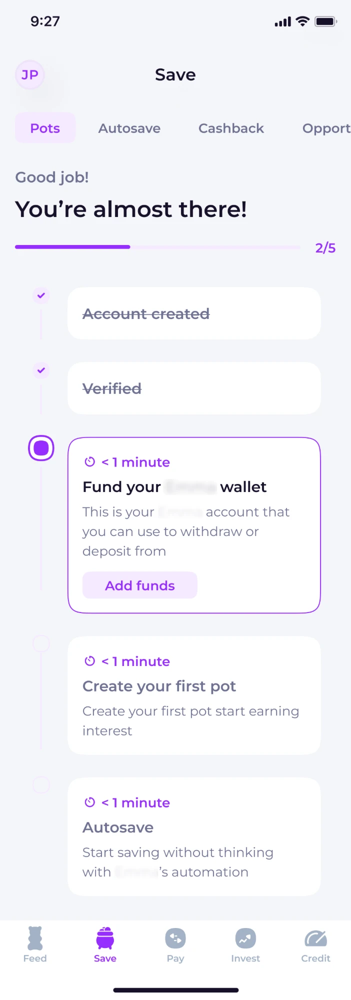
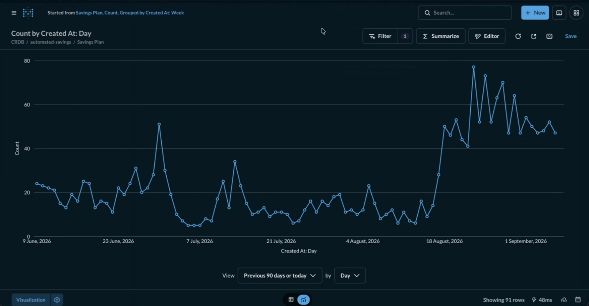

For a UK savings & investing app — collapsing a two-step, wallet-mediated deposit flow into one action.
A seven-month decline in Autosave engagement reversed within weeks of launch. Daily Autosave volume held at 5–6× its prior level for the following month, and dropping the wallet vendor cut a recurring cost of roughly £10,000–20,000/month.
Role: Senior Product Designer, sole designer on this workstream, reporting directly to the CEO.
Weekly Autosave-setup volume had been declining for roughly seven months before this project started. That trend signalled something in the funding path was blocking users.

Diagnosis without full instrumentation
Not every screen in the original flow had event tracking, so I couldn't attribute the decline to a single step from data alone. Instead, I mapped the onboarding flow structurally: every forced wait or interruption a user could hit between creating an account and having a working, automated pot.
The original Save onboarding flow asked users to complete three tasks to get from “no account” to “money automatically saving” — fund a wallet, create a pot, and set up Autosave — structured as a strict, forced sequence with four breakpoints along the way, none of which a user could work around or progress past on their own.
These four breakpoints fall into two different shapes. Funding the wallet and waiting for it to clear are the same pattern twice — a user waiting on a transfer with no way to keep moving forward. The KYC review is a different kind of wait: not a fixed delay but an uncertain one, where the outcome isn't knowable upfront. And the subscription-plan screen isn't a wait at all — it's a business goal inserted into the middle of a task goal, at the point of highest friction tolerance.
Together, they meant a user could do everything right and still not have a working, automated savings pot until at least a day — sometimes longer — after they started, without ever understanding why.

Of the four, two stood out as the likeliest explanations for this specific decline — not because the data proved it, but because of what each one actually blocks.


The wallet-funding wait was the most direct suspect: it's the step where the most real-world time elapses, and the one most obviously tied to whether a user ever finishes creating an Autosave-linked pot at all. The subscription-plan screen was a close second — mid-flow monetisation prompts are a well-known drop-off point, even without an event log here to prove it.
I treated this as a testable assumption, not a certainty — I couldn't prove step-by-step attribution from the data available. So the design addressed all four breakpoints at once: removing the wallet, deferring KYC, and keeping pot creation clear of the plan comparison, rather than betting the whole redesign on one diagnosis being right.
One flow, two rails
After: bank → pot, directly, in one action. The wallet still exists as internal plumbing behind the scenes, but the user never sees it, funds it, or waits on it as a separate step.
For onboarding specifically, I also took the subscription-plan comparison out of the path entirely: a user sets their initial deposit, then moves straight into Autosave setup, both via Direct Debit, with no wallet and no upgrade prompt in between. Comparing paid tiers is a business goal, not a task goal — it has no place at the point where a user is most likely to give up.
Open Banking made a faster default possible, but it doesn't work for every bank, and Autoinvest specifically requires Direct Debit — so I designed the deposit flow around a smart default rather than a single blanket rule.
For onboarding, the payment rail is fully resolved by the system — nothing for the user to choose. For a one-off deposit, the system picks a smart default (Open Banking, or Direct Debit if the balance falls short) but leaves Direct Debit available as an explicit choice for anyone who wants it. Most users' job stays constant — tap one button — while the option to choose stays there for the ones who go looking for it.
I worked through this branching logic with AI — including edge cases like an in-flight Direct Debit payment landing after the balance check already fired — before handing the fully specified rules to engineering to build.
Alongside collapsing the deposit step, we also moved KYC later in the flow. Rather than front-loading it before a user could even choose a pot, KYC now runs only after the user has confirmed the pot's deposit amount and Autosave setup — the last step of the Save journey, not the first — and only triggers for users who haven't already passed KYC. That removes the uncertain wait users used to hit immediately after account creation, before they'd reached anything worth waiting for.
This directly addresses the earlier diagnosis: regulatory data collection was one of the heaviest, least reversible steps in the old flow, and pushing it past the point of stated intent means we only run — and pay for — KYC checks on users who've already committed to funding an account. It also lets the part of the flow users actually came for — setting the deposit amount and Autosave rules — complete faster, since it's no longer gated behind identity verification.
The Autosave rules screen got simpler alongside this, too. The original packed AI savings, Round Ups, and a custom amount onto one screen as three simultaneous toggles — more choice than most users needed to make at once. I split it into a short branching sequence instead: first, whether the user already has a savings amount in mind — “yes” goes straight to a custom-amount entry, “no” goes to an AI-suggested amount. Round Ups, the smallest and least consequential of the three, moved to the end as an optional boost rather than sitting alongside the two bigger decisions.
By mid-June, this direction was already drafted and under review — the core shape of the redesign predates what happened next.
We'd already scoped this as a planned migration: phase the wallet out gradually, migrate existing balances, retire it on our own schedule. Then on 30 June, our banking infrastructure partner quietly blocked the creation of new wallet accounts, with no warning — new users could no longer onboard the old way, starting immediately. The redesign had to ship for new users right away, while the fade-out for existing balance-holders continued in parallel on the original timeline.
I could have treated this purely as an outage to patch around. Instead, I used the forced timeline as a reason to fix things we already knew were wrong: collapsing two actions into one, giving every user a working funding path regardless of their bank, and replacing an accidental “front door” with deliberate entry points. The constraint didn't lower the bar on the solution — it removed the option of deferring it.
The plan accelerated:
A fade-out, not a cutover
We couldn't delete the wallet for everyone on day one; some users still had real money sitting in it. The rollout split into two tracks running in parallel:
The wallet had also doubled as the app's general-purpose “add money” entry point. Removing it removed that entry point along with the friction it caused, so alongside the redesign I added explicit Add money buttons directly on the Save and Invest tab home screens, letting a user fund a pot or investment account in one tap without first drilling into a specific pot.
In the weeks following the redesign, the decline reversed: daily Autosave volume held at 5–6× its prior baseline for the following month — including a run of days that matched the app's previous busiest week of the year (early January), a signal the team read as evidence the new flow could sustain that level of activity, not just spike it.
The change also had a favourable financial shape: dropping the paid wallet-vendor relationship saves roughly £10,000–20,000/month, against a one-time cost in the tens of thousands for the banking partner to build the direct-funding API that enables Stage 2. The design case for the redesign stood on its own; the economics just made the internal timing easier to justify.

Stage 1 (shipped) was the design fix available on our timeline — it solved the user-facing problem immediately. Stage 2 (next) is the infrastructure fix: once our banking partner finishes building its own funding API, the wallet's remaining plumbing retires entirely, and we can fund the pot with no internal staging step at all.
The interesting part of this project is where regulated financial infrastructure meets interaction design: the constraint wasn't aesthetic, it was a payment-rail and KYC/regulatory reality that had to be resolved by the system rather than exposed to the user. The forcing function — a partner cutting off wallet creation with no warning — meant the design had to hold up under a compressed, non-negotiable timeline, and be phased safely against real user balances rather than shipped as a single cutover.